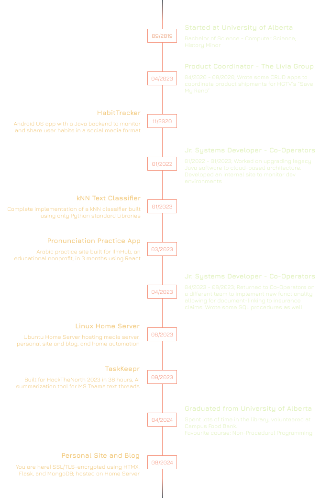

Matheus Duncan
About Me
Hi, I'm Matheus! I'm a Canadian new grad software developer with an interest in developing backend systems. I've been writing code since grade school (shoutout Adobe DreamWeaver) and graduated from the University of Alberta with a Bachelor of Science in Computer Science in 2024.
My career as a Software Developer started at Co-Operators, where I worked as an intern from 01/2022-01/2023. I returned to the Co-Operators on a different team in summer 2023 as my last internship before graduation.
If you want to know more about my work experience, checkout out my Timeline or download my Resume.
In my free time, I've also been known to work on some programming projects. Some of these projects have been for my own use (to learn or make my life easier) and some have been for classes or freelance work.
My favourite (and most comprehensive!) project so far has been Pronunciation Practice. This was a greenfield web app built for IlmHub, an Edmonton educational non-profit. It allows students to practice their Arabic reading and pronunciation skills from home using lessons assigned by their instructor. My team of 5 built this project in just 4 months and successfully deployed it to cloud, where it's been used since to help educate >500 students every year.
This Site
This site was built to give me a place to share some info about myself and explore new technologies. My previous personal site was built with React and was beginning to lose performance due to typical React Bloat. I decided to do a rewrite using a simpler stack - HTML/CSS, HTMX, and Flask - to simplify the system and allow for more tinkering as well. It also allows me to move away from the React Single Page Application format and towards a more 'traditional' site design (which IMO suits personal sites better).
Everything is containerized using Docker and Docker Compose and deployed on my personal home server as an additional exercise in deploying web applications. In this site's current form, this is fairly simple, but I plan on adding some backend features that will require more intense containerization.
I wanted to try building a modern site without using JavaScript as an exercise in moving away from traditional technologies. This site uses HTMX and flask as a simple web server to deliver a true RESTful API (data sent from the server is sent as HTML, therefore being truly REpresentational). If you want to know more about HTMX, I recommend the Hypermedia Systems textbook.
Timeline
Resume
If you've made it this far (or even just clicked the 'Resume' link on the navbar), thanks for taking a look at this site! No piece of software is ever really 'done' and this site is no exception, so if you have any comments/suggestions/hatemail you can send me a message.
If you want to take a look at my resume and reach out, you can download it here in .pdf format:
Matheus Duncan Resume
Lastly, if you're looking for something to read, check out my blog (I mostly do project retrospectives and some tutorials). If you're looking for something high-quality to read, checkout out my bookshelf where I upload and review my recently-read books.
_..._
.' '. _
/ .-""-\ _/ \
.-| /:. | | |
| \ |:. /.-'-./
| .-'-;:__.' =/
.'= *=|NASA _.='
/ _. | ;
;-.-'| \ |
/ | \ _\ _\
\__/'._;. ==' ==\
\ \ |
/ / /
/-._/-._/
jgs \ `\ \
`-._/._/